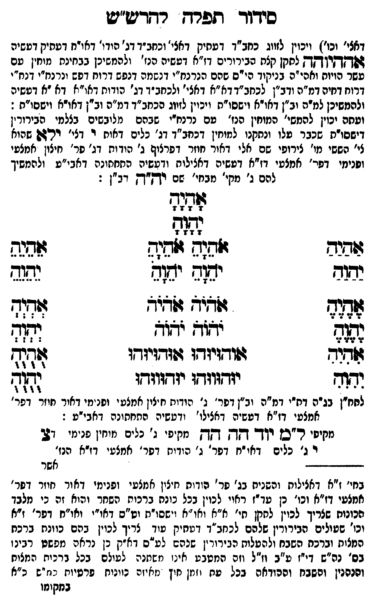

Neue Klartextfassung
[ומשם יכוין להמשי' המוחין הנז' עם נרנח"י שבהם מלובשים בצלמי הבירורין דישסו"ת שכבר עלו ונתקנו למוחין דכחב"ד דג' כלים דאות י דג' יאל שהוא לי' הכ'[?] מו' צירופי שם אלי דאור חוזר דפרצוף ג' הודות דג' פר' חיצון אמצעי ופנימי דפר' אמצעי דז"א דעשיה דכללות ורביעיה התחתונה דאבי"ע ולהמשיך להם ג' מקי' מבחי' שם יה"ה דב"ן:] === טבלה === [טור ימין] אַהַיַהַ יַהַוַהַ אֶהֶיֶהֶ יֶהֶוֶהֶ אִהִיִהִ יִהִוִהִ [טור אמצעי] אָהָיָהָ יָהָוָהָ אֹהֵיָהֵ אֹהֵיָהֵ יֹהֵוָהֵ יֹהֵוָהֵ אֹהֹיֹהֹ אֹהֹיֹהֹ יֹהֹוֹהֹ יֹהֹוֹהֹ אוּהוּיוּהוּ אוּהוּיוּהוּ יוּהוּווּהוּ יוּהוּווּהוּ [טור שמאל] אֵהֵיֵהֵ יֵהֵוֵהֵ אְהְיְהְ יְהְוְהְ אֻהֻיֻהֻ יֻהֻוֻהֻ === סוף טבלה === [לחח"ן בג"ה דת"י דמ"ה וב"ן דפר' ג' הודות חיצון אמצעי ופנימי דאור חוזר דפר' אמצעי דז"א דעשיה דכללו' ורביעיה התחתונה דאבי"ע:] [מקיפי ל"ם] יוד הה הה [מקיפי ג' כלים] [מוחין פנימי דצ'] צ י ג' [ג' כלים דאו"ח דפר' ג' הודות דפר' אמצעי דז"א הנז']
Original gegen neue OCR · Niqqud für Vergleich ausgeblendet
Original
[ומשםK095-001 יכוין להמשי' המוחיןK095-002 הנז' עםK095-003 נרנח"י שבהם מלובשים בצלמי הבירורין דישסו"תK095-004 שכבר עלוK095-005 ונתקנו למוחין דכחב"ד דג' כלים דאות י דג' יאלK095-006 שהוא לי' הכ'K095-007 מו' צירופי שם אליK095-008 דאור חוזר דפרצוףK095-009 ג' הודות דג' פר' חיצון אמצעי ופנימיK095-010 דפר' אמצעיK095-011 דז"א דעשיה דכללות ורביעיה התחתונהK095-012 דאבי"ע ולהמשיך להם ג' מקי' מבחי' שם יה"ה דב"ן:] === טבלה === [טור ימין] אהיה יהוה אהיה יהוה אהיה יהוה [טור אמצעי] אהיה יהוה אהיה אהיה יהוה יהוה אהיה אהיה יהוה יהוה אוהויוהו אוהויוהו יוהוווהו יוהוווהו [טור שמאל] אהיה יהוה אהיה יהוה אהיה יהוה === סוף טבלה === [לחח"ןK095-013 בג"ה דת"יK095-014 דמ"ה וב"ן דפר' ג' ∅K095-015 הודות חיצון אמצעיK095-016 ופנימי דאור חוזר דפר' אמצעיK095-017 דז"א דעשיה דכללו' ורביעיה התחתונה דאבי"ע:] [מקיפי ל"ם] יוד הה הה [מקיפי ג' כלים] [מוחין פנימי דצ'] צ י ג' [ג' כלים דאו"חK095-018 דפר' ג' הודות דפר' אמצעי דז"א הנז']K095-019
OCR · fehlbar
סידוד חזפרח רדדיש"יט דאצי' וכו' ויכוין לזווג כחב"ד דעתיק דאצי' וכחב"ד דג' הידו' דאויח דעתיק דעשיה גפ[ד[ךיןאך לחקן קצת הבירורים דז"א דעשיה הנז' ולהמשיכן בבחינת מוחין עם עשר הויוח ואהי"ה בניקוד הי"ס שהם הנרנח"י דנשמה דנפש דרוח דפש ונרנח"י דנח"י דרוח דחיה דמ"ה ודב"ן לכחב"ד דא"א דאצי' ולכחב"ד דג' הודוח דאו"א דא "א דעשיה ולהמשיכן למדה וב"ן דאו"א וישסו"ת ויכוין לזיוג הכחב"ד דמ"ה וב"ן דאורא וישסו"ח : וטחהK095-001 יכוין להמשי' מוחיןK095-002 הנז' טםK095-003 נרנח"י שבהם מלובשים בצלמי הבירורין דישסוותK095-004 שכבר טלוK095-005 ונתקנו למוחין דכחב"ד דג' כלים דאוח ר דצי' רריגשK095-006 שהוא י' הששיK095-007 מו' צירופי שם אל יK095-008 דאור חוזר. דפרלוףK095-009 ג' הודות דג' פר' חיצון אמצעי ושנימיK095-010 דפר' אמצטיK095-011 דז"א דטשיה דאצילוח ודעשיה החחחונהK095-012 דאבי"ע ולהמשיך להם ג' מקי' מבחי' שם יקק"ךק דב"ן : אתזחגז- 7 ו 7 7 לג(ף 7 7 7 ו צללל זזזגש גלשנ9 שנס בלש יש( יגן(ח צתנד לל זזשיש ז(3יצ זד(ד לל[ל4 ידץודק ידזוך וה( זחיר גשודזיזד1 4וזדזיזדז (דז- יתף יזדווושו יזדזוזדץו וגז- לחח"ןK095-013 בג"ה דח"יK095-014 דמ"ה וב"ן דפר' ג' הידות חזין אמצעי ונמי דאיר חוזר דפר' אמצעי דז"א דטשיה דאצילו' ודטשיה התחתונה דאבי"ע : מקיפי ר"סן ידך דק דקץ מקיפי ג' נלים מיחין פנימי 27 ר ג' כלים דאי"ח דפר' ג' הודיח דפר' אמצעי דז"א הנז' לשלך אשר בחי' ז"א דאצילות והשניח בג' פר'K095-015 הודות חצין אמצטיK095-016 ופנימי דאור חוזר דפר' זמצעיK095-017 דז"א וכו' כן עד-ז ראוי לכוין בכל כונת ברכוח השחר והוא זה כי מלבד הכונוח שצריך לכוין לחנןן חיץ א"א ואו"א וישסו"ת וט"ס דאו"י ואו"חK095-018 דפר' ז"א וכו' בטולים הבירורין שלהם לכחב"ד דטחיק עוד צריך לכוין בהם כוונח ברכח המצות וברכת השבח ולהטלות הבירורין שנהם לע"ס דא זק כן נראה מפשט רבינו בס' נה"ש דיייז ע"ב וז"ל וזה המטבע אינ' משתנה לעולם בכל דרכיח המצוח וכנםנין ורשבח וההודאה בכל טח יזמן חוץ מאיזכ כוונוח פרטיות כח"ש כ"א במקוזוK095-019